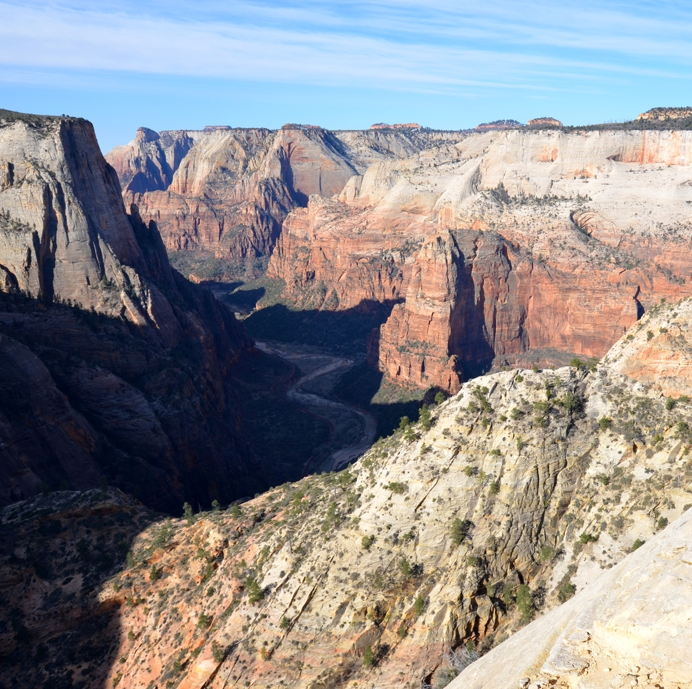

Clockwise: Kolob Canyons, Observation Point Trail, East Temple, and the Visitor Center. (Courtesy of the National Park Service)
~Something brilliant about graffiti at Zion National Park~
Clockwise: Kolob Canyons, Observation Point Trail, East Temple, and the Visitor Center. (Courtesy of the National Park Service)
This ancient rock was defaced in December 2020. Click each circle to learn more about the impact of vandalism in the park.
Source: National Park Service